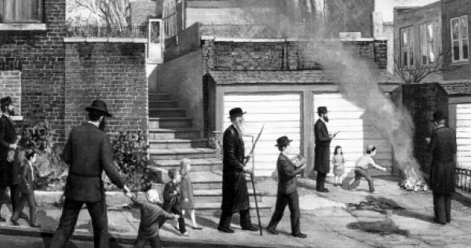

Ushering in Pesach in the Lubavitch of the Rebbe Rashab
On Erev Pesach in Lubavitch there was a feeling of satisfaction and joy that grew out from the great hopes that Moshiach was finally coming, the Beis HaMikdash would be rebuilt and the Korban Pesach brought. * A compilation of stories about the Rebbe Rashab and Pesach, to mark Beis Nissan, the Yom Hilula of the Rebbe Rashab and the upcoming holiday.

CHECKING AND SELLING THE CHAMETZ
The Rebbe Rashab would invite some bachurim to his house and tell each one which area to check for chametz. The bachurim would listen to the Rebbe say the bracha and then would go and check. Afterward, they would go and check for chametz in the dining room of the yeshiva and in the tea room and other places.
They gave the chametz they found to the Rebbe so he could burn it.
One time, one of the bachurim, R’ Avrohom Boruch Pevsner, returned from a thorough checking and told the Rebbe he had not found any chametz. The Rebbe said, “The mitzva is to search, not necessarily to find.”
***
The Rebbe Rashab would also sell his horses to a gentile (in addition to selling his chametz through the rav). He would go with the gentile along with his personal valet to the stable and arrange the sale there.
I, and some of the talmidim who saw that the Rebbe was in the yard, ran after him and heard the Rebbe say to the gentile in Russian, “Will you buy the horses?” Then the Rebbe noticed us and told us to go back.
***
The burning of the chametz was done in the large hall of the yeshiva in one of the ovens next to the entrance. They began heating up the oven that the Rebbe used to burn the chametz from early in the morning so the oven would be full of glowing coals for the burning of the chametz.
After the burning and saying the Yehi Ratzon, the Rebbe said to the talmidim, “Just as the physical chametz was burned, so too, the spiritual chametz should be burned.” Then he added, “A healthy summer,” and he went home.
(From the memoirs of R’ Refael Nachman Kahn – Lubavitch V’Chayaleha)
DRAWING THE MAYIM SHELANU IN LUBAVITCH
This is how the Chassidim remember the days of matza baking that took place in Lubavitch in a festive spirit and a state of elevation:
The work of drawing the water for kneading the shmura matzos that were baked for the Rebbe Rashab on Erev Pesach was done festively and with great joy. The Rebbe himself took part and went with the bachurim to the river behind Binyamin’s Shtibel in Lubavitch.
The entire way, from the Rebbe’s house until the river, the bachurim walked in a long procession and sang. At the head of the procession went the Rebbe and around him walked all the mashpiim and mashgichim of the yeshiva, and behind them were all the bachurim of the yeshiva.
At this time of year, when the snow melted, the streets in Lubavitch, which was a small town whose streets were not properly paved, were full of mud. For this reason, walking was hard for the Rebbe even though the distance from his house to the river was not great.
The drawing process was not simple because large parts of the river were still frozen and they had to find a spot where the snow melted from where it was easy to draw mayim sh’lanu. They usually drew the water not far from the bridge near the flour mill. The bachurim would enter the river with their shoes while the Rebbe stood on the banks of the river and drew water with a cup attached to a long stick.
One year, the Rebbe’s health was particularly precarious and he did not leave his house for days. When it came time to draw the water, the household members realized that the Rebbe would not forgo this lofty event and he would definitely be leaving the house. One of the household members spoke to Rebbetzin Rivka, the Rebbe’s mother, and asked her to tell her son that this year he should not go to draw the mayim sh’lanu.
The Rebbetzin, who was known as an exceedingly wise woman, said, “I cannot mix into my son’s spiritual matters.” The Rebbe went as usual.
***
The custom was that after drawing the water, all the bachurim would dance in the yard. The Rebbe would sit in his room and watch through a window.
One year, the Rebbe said about a bachur, Shimshon Milner of Vitebsk, “I saw how Shimshon Vitebsker danced after bringing the mayim sh’lanu and his yechida of the nefesh was illuminated.”
Next to him danced the bachur, Refael Cohen, may Hashem avenge his blood, later the rav of Germanovitch. He said afterward that Shimshon’s face shone so much that it was impossible to look at him.
BAKING THE MATZA
Baking matza in Lubavitch was a great and wondrous avoda. The Rebbe was present during the baking and he would stand the entire time in the room where the women rolled the matzos and would watch all the workers.
R’ Mendel of Liadi (a teacher in Tomchei T’mimim) would hold the dough. When he held the meira (the large dough from which smaller pieces are torn off for individual matzos), he would hold and knead it with all his might. One time, the Rebbe told him, “You need to hold onto the moira (awe, fear) in the cheider just like you hold onto the meira here.”
Some of the bachurim would change the paper on which they rolled the matzos and they were also the ones who would bring the matzos to the room where the oven was, which is where they also made holes in it. They made holes with thin pieces of wood. A number of bachurim would make holes in each matza individually.
The Rebbe’s son, the Rayatz, stood near the oven and supervised the baking.
After the matzos were baked, the Rebbe gave a matza to each of the bachurim who worked there.
(Lubavitch V’Chayaleha; Likkutei Sippurim)
FORTUNATE IS THE ONE WHO SAW THE SIDREI PESACH IN TOMCHEI T’MIMIM IN LUBAVITCH
R’ Chaim Mordechai Perlov, a talmid in Tomchei T’mimim in Lubavitch, related:
Until 5666 the way it was in Yeshivas Tomchei T’mimim in Lubavitch was that the bachurim would spend Pesach in one of the local hostelries. Starting from the year 5666, something new was enacted. Each talmid, including those from well-to-do families, would remain in yeshiva and eat there during Pesach. This system was also arranged for the young talmidim of the chadarim who did not eat in the yeshiva dining room all year.
The Rebbe’s son, Rayatz, the “acting dean” of the yeshiva, was in charge of arranging and running things. Everything the Rebbe’s son did was done in the most meticulous manner.
Rayatz sent a messenger to Vitebsk to buy big pots as well as plates and cups and utensils. He bought so much that when it was stored in the yeshiva’s kitchen it looked like a huge housewares store.
Since the usual dining room wasn’t big enough for all of them, certainly not for sitting comfortably in a way that would allow for rejoicing on the holiday properly, the big zal was chosen as a suitable place for a dining room. A special team of bachurim was chosen to clean, kasher and arrange the zal for this purpose.
The first night of Pesach, after Maariv, the Rebbe Rashab entered the zal with his son. The zal looked new. It was clean and sparkling, and set and ready for the Seder by the bachurim. Later on, they said that the Rebbe said the appearance of the zal was a “spiritual delight.”
R’ Yehuda Chitrik, also a talmid of the yeshiva, said:
The nights of the s’darim and the rest of Pesach were run in the most orderly way. The hanhala appointed someone in charge and an assistant. They, together with a team, were responsible to see to it that everything went smoothly.
A list of names of talmidim was hung on the wall, stating who sat at each table. Each class sat at its own table and at every table there was someone in charge who had to supply each person with whatever he needed for the ke’ara and the four cups of wine.
One of the bachurim was appointed to sell the various honors such as asking the four questions out loud; who would finish each section in the recitation of the Hagada; a certain dance in front of a certain table; filling up Eliyahu’s cup; opening the door for Eliyahu; and Birkas ha’zimun. The money was later given to the Kupas Bachurim.
After they all found their places, the one in charge would announce, “Table 1 will say Kiddush.” After they finished Kiddush, he would announce, “Table 2 will say Kiddush.” The same was done for all the tables. As long as the previous table did not say Kiddush, the others did not begin.
The same was with washing the hands. The one in charge announced it according to tables. Obviously, doing it this way, when there were close to 200 talmidim present, in addition to the dancing, the s’darim ended late at night. The first night it ended at 2 in the morning and the second night at four in the morning.
In the middle of the hall was a table with a large candelabrum that was made by the Rebbe Maharash. The candelabrum was comprised of 613 pieces of wood and had thirteen branches. It was painted with three colors – brown, yellow and a color almost black. All the dancing took place around this table.
Throughout the years, the days of Pesach were very joyous with much joy and public celebration, “and in the multitude of the nation is the glory of the King.”
BOILING WATER ON THE REBBE’S FINGERS
The Rebbe Rayatz related:
One year before Pesach my father went to the room where they koshered the utensils for Pesach (they also koshered the utensils that were exclusive for Pesach). He would oversee the work.
When they koshered the water urn, the Rebbe tossed white hot stones into the water so the water would boil hotter. He simultaneously opened the faucet from which water came out of the urn. The boiling water burned his hand.
The Chassid, R’ Michoel Dworkin was present. When he saw what happened, he cried out, “Oy, Rebbe! Your fingers are burned!”
The Rebbe Rashab, whose holy face was bright with joy, said, “Are my fingers not Chassidish? A Chassid does not need to refrain from doing what needs to be done, whether it is cold or hot.”
(Seifer HaSichos 5708)
OPENING THE DOOR FOR ELIYAHU
The Rebbe Rayatz related:
When I was a little boy, my father (the Rebbe Rashab) held a seder in the home of my grandmother, Rebbetzin Rivka (wife of the Rebbe Maharash). When they reached the part in the Hagada of “Pour out Your wrath,” they would open all the doors of the rooms, from the room which they were in until the front door.
In order to open the doors, they sent distinguished guests who were with them at the table. Although Eliyahu HaNavi can find a Jewish home and enter it on his own, we still need to go and open the door ourselves to let him in.
One time, when I was a boy, they sent me to open the door. One of the doors was double. I opened the first door but the other half needed to be opened from on top. I stood on a chair but still was unable to reach the upper knob. Finally, my father came and picked me up.
When I got off the chair, I sighed from the physical exertion. My father said, “In order to allow a Jew, Eliyahu HaNavi, to enter the house, we need to exert ourselves.”
(Seifer HaSichos 5707)
THE NEWS THAT ARRIVED THAT NIGHT
In 5664-5, during the Russo-Japanese War, the Rebbe Rashab sent packages of matza to Jewish soldiers who fought in Shanghai. The Rebbe was in Paris at the time. Baron Ginsberg, a wealthy man with connections in royal circles, was there too.
The Rebbe Rashab hoped to use his connection to the Baron in order to send the matza to the soldiers, but at that time he was estranged from the Baron. The Baron was upset with the Rebbe for his opposition to secular studies in Jewish schools.
Despite this, the Rebbe went to the Baron and begged him to obtain permission to send matza to the soldiers. The Baron caustically said, “The Jews have Pesach Sheini …”
The Rebbe replied, “On the front lines there are no barons; the soldiers are simple Jews. They don’t know any tricks. They need matza for Pesach.”
After much effort, the Russian government helped in sending matza to the soldiers. Seder night, a telegram arrived at the Rebbe Rashab’s home from Petersburg with the news that all was in order and the matza had reached its destination. The Rebbe was excited at this good news and he stood up and said, “Praise to G-d.”
(Seifer HaSichos 5702)
Rabbi Boruch Merkur. "Ushering in Pesach in the Lubavitch of the Rebbe Rashab." Beis Moshiach, no. 922 (April 1, 2014).